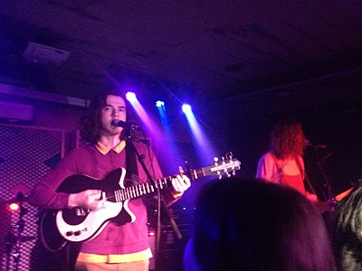

Peach Pit is an indie pop band from Vancouver, British Columbia, Canada.[1] The band consists of singer and rhythm guitarist Neil Smith, lead guitarist Christopher Vanderkooy, bassist Peter Wilton, and drummer Mikey Pascuzzi.

They describe their own music as "chewed bubblegum pop",[2] whereas critics have described their sound as sad pop, and surf rock[3] and is characterized by a soft spoken vocal style and guitar-driven rock melodies.[4][5] The band's music videos are produced by videographer Lester Lyons-Hookham.[6][7] The band sported the same clothes for every live performance during their "Being So Normal" album phase after buying them for their first music video shoot.